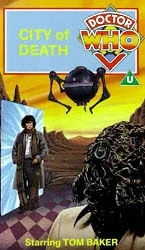
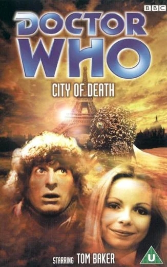
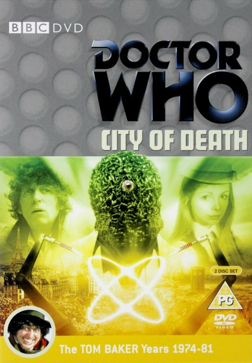
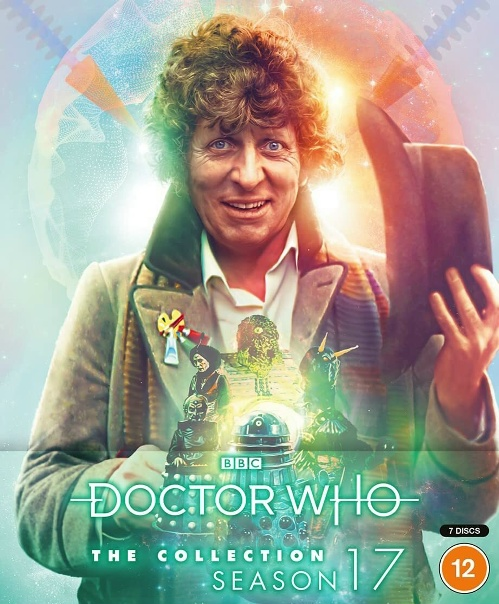
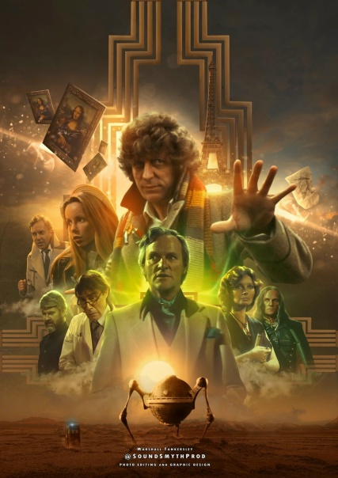
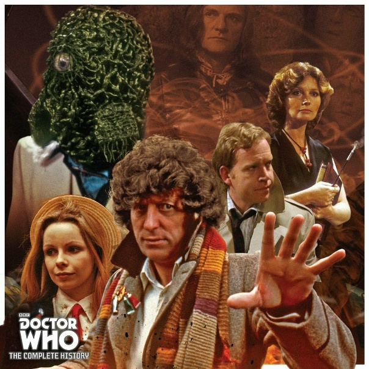

Эра Четвертого Доктора (17 сезон)
<<< НАЗАД ||| 2. Город смерти ||| ДАЛЬШЕ >>>
Субтитры: Русские и Английские |  |
|---|---|
с обновлением визуальных эффектов (cunningmunki) Субтитры: отсутствуют | |
City of Death
Дата выхода: 29 сентября - 20 октября 1979
Формат: 4 эпизода по 25 мин.
 |  камео |
Доктор и Романа отдыхают в Париже, но случайная трещина во времени и брошка, продающаяся по многократно завышенной цене, выводят их на след графа Скарлона — последнего представителя инопланетной расы джагаротов, чей корабль потерпел крушение на Земле четыреста миллионов лет назад. Чтобы вернуться домой, Скарлон намерен помешать эволюции жизни на планете, что сотрёт человечество из истории. Серия, которую доделывал Дуглас Адамс, — и она стала вершиной сезона: съёмки в настоящем Париже, лёгкий диалоговый юмор, детективный темп и камео Джулиана Гловера в роли Скарлона. Одна из самых любимых серий у фанатов за всю историю классического сериала.
 VHS - июль 1991 |  VHS - май 2001 |
|---|---|
 DVD - 7 ноября 2005 |  Blu-ray - 20 декабря 2021 * Версия в нашей группе |





Трейлер: